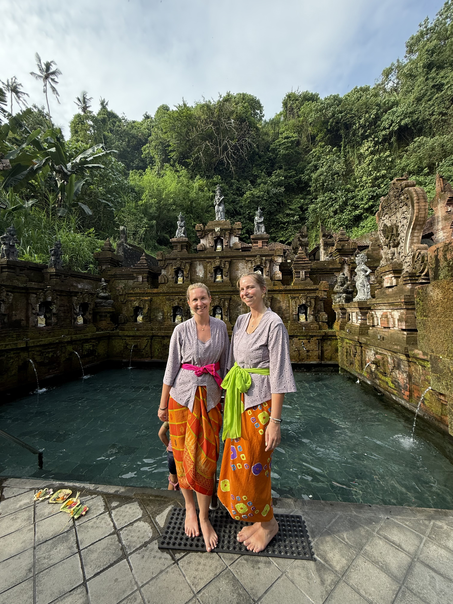

Qui sommes-nous?
Avant d’être un projet, Evasia, c’est d’abord une amitié. Nous sommes Céline et Virginie, amies depuis l’enfance avec une passion commune : le voyage.
Au fil de nos voyages, une destination a pris une place particulière dans nos coeurs : Bali.
Son énergie, sa spiritualité, ses sourires, ses paysages, sa culture,… Bali est devenue une évidence, une seconde maison pour nous. Cette passion partagée a donné naissance à un projet commun : Evasia. Notre agence de travel planning est née d’une envie profonde de :
- transmettre tout ce que nous aimons de Bali
- faire découvrir l’ile autrement
- créer des voyages qui ont du sens
- proposer des expériences authentiques, humaines et alignées avec nos valeurs
Notre mission ?
Vous faire vivre Bali autrement, loin des clichés et du tourisme de masse mais au plus proche de l’essentiel : les rencontres, la culture, la nature, la spiritualité et cette magie inexplicable que seule Bali sait offrir.Vous souhaitez découvrir le Bali authentique ?

Nos offres
Voyage sur-mesure
Vous n’avez pas le temps d’organiser votre voyage à Bali? Evasia vous propose un voyage sur-mesure.
Mon voyage solo personnalisé
Partir seul·e ne signifie pas voyager sans support. Nous proposons des expériences spécialement conçues pour les solo travelers : rencontres locales, activités sécurisées, hébergements confortables et opportunités de partage. Profitez de Bali en toute sérénité, avec des suggestions de parcours enrichissantes et des conseils pratiques pour une aventure inoubliable.
Dans cet onglet, vous trouverez aussi le kit du voyageur solo pour vous aider à préparer votre aventure
Itinéraires thématiques Découvrez nos itinéraires conçus pour découvrir Bali en deux semaines à travers différentes ambiances : nature et découverte, sous l’océan, aventure, spirituel. Bali Map Découvrez toutes nos bonnes adresses à Bali dans une carte interactive. Guide pratique Bali Ce guide a été pensé comme une base complète pour organiser votre voyage sans stress, sans incertitudes et sans mauvaises surprises. Vous y trouverez des informations claires, concrètes et utiles. L’objectif est simple: vous permettre de partir l’esprit tranquille. Vous y trouverez des informations sur les documents nécessaires, la santé, la monnaie, les déplacements, les applications utiles, les cartes sim, la météo, les coutumes locales, la gastronomie locale…


Pourquoi Bali ?


Bali
Bali est une île indonésienne surnommée « l’île des dieux ». Entre rizières en terrasse, plages dorées, temples majestueux, volcans, Bali offre un décor apaisant et dépaysant.
On y découvre une culture unique: des offrandes déposées chaque matin, des cérémonies traditionnelles, une population réputée pour sa bienveillance et sa douceur.
On y découvre une culture unique: des offrandes déposées chaque matin, des cérémonies traditionnelles, une population réputée pour sa bienveillance et sa douceur.
Pourquoi partir à Bali ?
- Pour ses paysages variés
- Pour le bien-être
- Pour l’aventure
- Pour sa culture
- Pour sa gastronomie
- Pour son climat tropical.
"Hello les filles, petit retour sur mon carnet de voyage ! Merciiii pour ça ! Il est vraiment au top, et complet, ça me rassure énormément pour mon voyage et ça va me donner les ailes pour 🌸😍 que ça soit au niveau de tout ce qu'il faut penser avant, des listes de choses à prendre, des conseils, des activites ou des idees logement, tout y est 🌟"
Sarah
Voyageuse solo